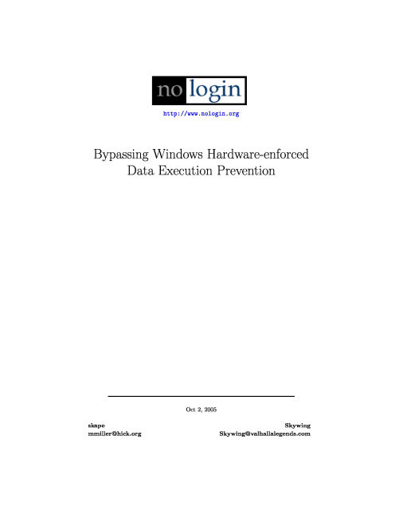
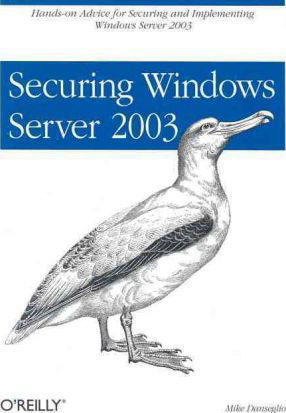

Attacking the Windows Kernel - Jonathan Lindsay
A small publication from NGSSoftware Insight Security Research into methods of attack, tools and other info
Windows XP/2003 Heap Exploitation - John McDonald
Documentation on gaining entry and exploiting Windows Heap Manager and its internals, from the Fundamentals to the actual Strategy used to exploit

Bypassing Windows Hardware-enforced
Data Execution Prevention - nologon.org
Information on different modes of DEP which was introduced in Windows XP SP2/ Server 2003 SP1 and methods of bypassing it

Securing Windows Server 2003 - Mike Danseglio
Overview on securing your Windows Server 2003 install over the Network, File Permission and Authorization, Group Policy and More!